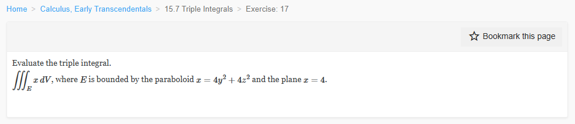

Please solve the problem in the following image.
(Image `20260928_141519_394212_utc_0800_0.png`. Alt text: Image: human_20260928_141519_394212_utc_0800)

20260928_141519_394212_utc_0800_0.png
End of problem
Answer
## Evaluate $\iiint_E x\,dV$
**Region:** $E$ is bounded by the paraboloid $x=4y^2+4z^2$ and the plane $x=4$.
### 1. Describe the region
The paraboloid opens in the positive $x$-direction. Its intersection with the plane $x=4$ satisfies
$$
4=4y^2+4z^2 \quad\Longrightarrow\quad y^2+z^2=1,
$$
a unit disk in the $yz$-plane. Therefore,
$$
E=\{(x,y,z): y^2+z^2\le 1,\; 4(y^2+z^2)\le x\le 4\}.
$$
### 2. Set up the integral
For fixed $(y,z)$ inside the unit disk, $x$ runs from the paraboloid up to the plane:
$$
\iiint_E x\,dV
=\iint_{y^2+z^2\le 1}\int_{x=4(y^2+z^2)}^{4} x\,dx\,dA.
$$
Compute the inner integral:
$$
\int_{4(y^2+z^2)}^{4} x\,dx
=\left[\frac{x^2}{2}\right]_{4(y^2+z^2)}^{4}
=\frac{16-16(y^2+z^2)^2}{2}
=8\bigl(1-(y^2+z^2)^2\bigr).
$$
Thus
$$
\iiint_E x\,dV
=8\iint_{y^2+z^2\le 1}\bigl(1-(y^2+z^2)^2\bigr)\,dA.
$$
### 3. Switch to polar coordinates in the $yz$-plane
Let $y=r\cos\theta$, $z=r\sin\theta$. Then $y^2+z^2=r^2$ and $dA=r\,dr\,d\theta$, with $0\le r\le 1$, $0\le \theta\le 2\pi$. Hence
$$
\iiint_E x\,dV
=8\int_0^{2\pi}\int_0^1 (1-r^4)r\,dr\,d\theta.
$$
The $\theta$-integral gives $2\pi$, and
$$
\int_0^1 (1-r^4)r\,dr
=\int_0^1 (r-r^5)\,dr
=\left[\frac{r^2}{2}-\frac{r^6}{6}\right]_0^1
=\frac12-\frac16=\frac13.
$$
Therefore,
$$
\iiint_E x\,dV
=8(2\pi)\left(\frac13\right)
=\boxed{\frac{16\pi}{3}}.
$$
### Check by slicing perpendicular to the $x$-axis
At a fixed $x\in[0,4]$, the cross-section is
$$
y^2+z^2\le \frac{x}{4},
$$
a disk of radius $\sqrt{x/4}$ and area $\pi x/4$. Thus
$$
\iiint_E x\,dV
=\int_0^4 x\cdot \frac{\pi x}{4}\,dx
=\frac{\pi}{4}\int_0^4 x^2\,dx
=\frac{\pi}{4}\cdot\frac{64}{3}
=\frac{16\pi}{3},
$$
which confirms the result.
$$
\boxed{\frac{16\pi}{3}}
$$
---
No graphical results.